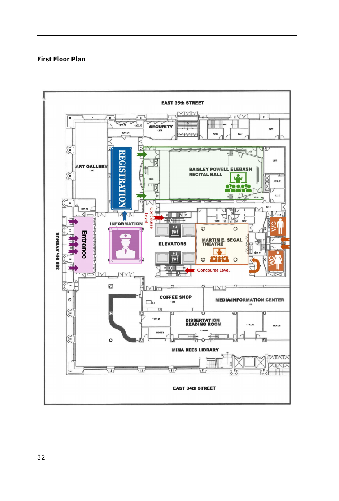

First floor
Enter from Fifth Avenue.
5th Ave
entrance
Registration
and info
Elebash Recital Hall
Martin E. Segal Theatre
Elevators
and stairs
DOWN
Concourse level
One level below the entrance.
Proshansky
Auditorium
C198
posters
C201
C203
Elevators
and stairs
UP
Talk roomDashed = navigation or poster area
Fast orientation: Elebash and Segal are on the entrance floor. Proshansky, C201, C203, and poster room C198 are downstairs on the concourse level. Elevators and stairs connect the two maps.
Schematic based on the MTMS 2026 booklet floor plans, pages 32-33. Not to scale.

First floor - tap to open full sizeConcourse level - rotated for easier viewing; tap to open originalOriginal MTMS 2026 booklet floor-plan images, pages 32-33.